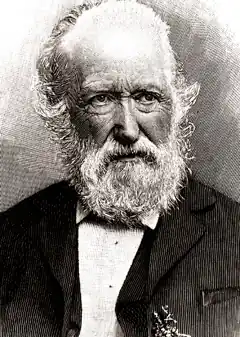

Закінчивши латинську школу в рідному місті та гімназію в Любеку, вивчав право в Кілі та Берлінському університетах. В 1843-1853 мав юридичну практику в Хузумі.
Народився 14 вересня 1817 в Хузумі (Шлезвіг – тоді датське герцогство). Закінчивши латинську школу в рідному місті та гімназію в Любеку, вивчав право в Кілі та Берлінському університетах. В 1843-1853 мав юридичну практику в Хузумі. Відносини між герцогством Шлезвіг і Датським королівством ставали все більш напруженими, і Шторм емігрував в Пруссію. В 1864 році, після закінчення війни між германськими державами і Данією (Данська війна 1864), в результаті якої Шлезвіг відійшов від Данії, Шторм повернувся в Хузум і до 1880 займав там судові посади. Помер Шторм в Хадемаршене (Гольштейн) 4 липня 1888.
Останній великий майстер мелодійною пісенної поезії, Шторм продовжив і довів до досконалості поетичну традицію, започатковану в перші роки 19 ст. Л. Тиком. Його Вірші (Gedichte, 1852) завоювали йому помітне місце серед німецьких поетів-ліриків. Прославився ж він головним чином новелами. Всі вони відображають страх Шторму перед швидкоплинністю часу – і одночасно втішне свідомість, що він здатний її подолати. Першою значною новелою Шторму була надзвичайно популярна в 19 ст. Иммензее (Immensee, 1850), однак більш важливими представляються Вершник на білому коні (Der Schimmelreiter, 1888) і його шедевр Aquis submersus (лат. "Поглинання водами") (1876).